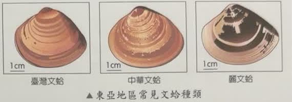
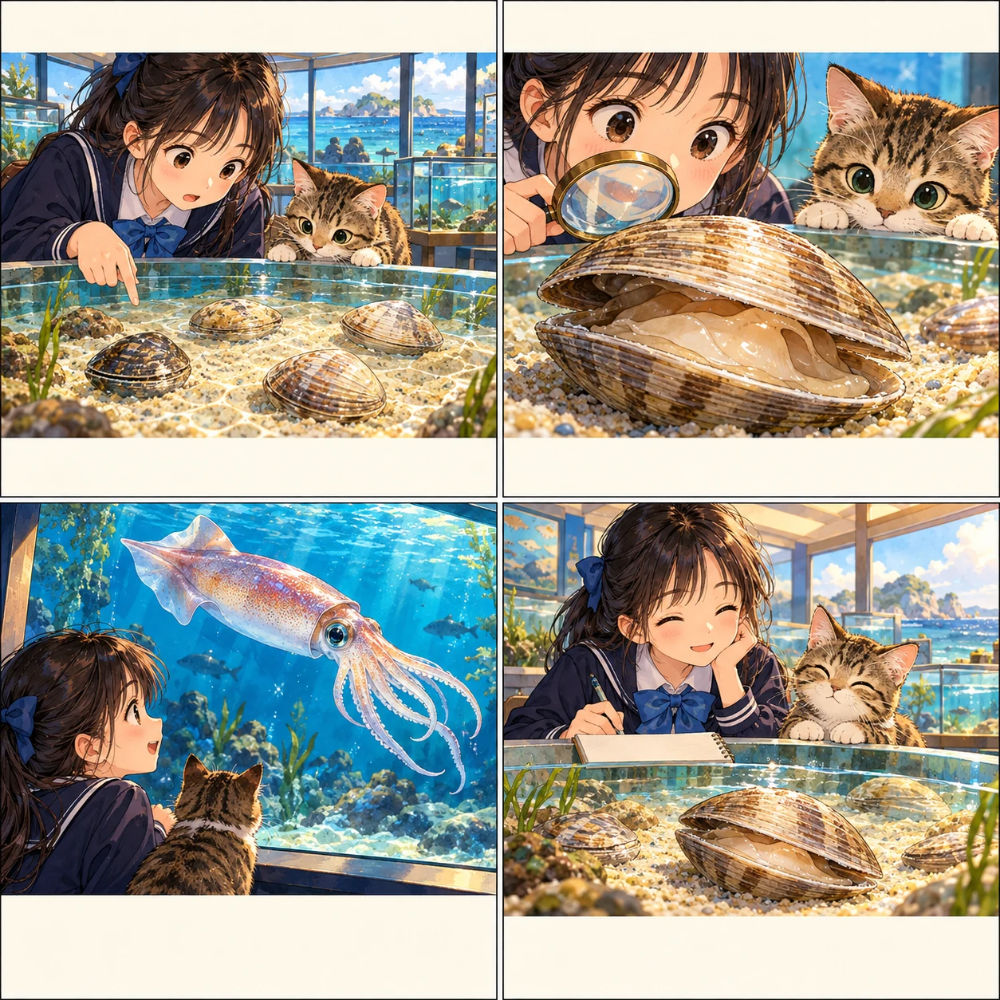
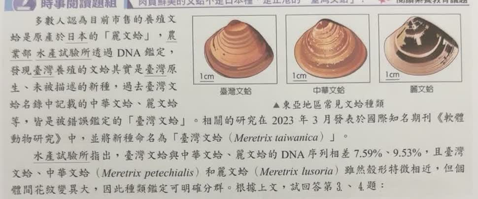
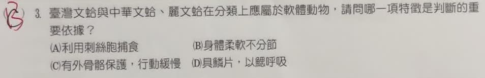

分享原卷｜第 3 題
完整原題
作答所需文章／材料
多數人認為目前市售的養殖文蛤是原產於日本的「麗文蛤」，農業部水產試驗所透過DNA鑑定，發現臺灣養殖的文蛤其實是臺灣原生、未被描述的新種，過去臺灣文蛤名錄中記載的中華文蛤、麗文蛤等，皆是被錯誤鑑定的「臺灣文蛤」。相關的研究在2023年3月發表於國際知名期刊《軟體動物研究》中，並將新種命名為「臺灣文蛤（Meretrix taiwanica）」。 水產試驗所指出，臺灣文蛤與中華文蛤、麗文蛤的DNA序列相差7.59%、9.53%，且臺灣文蛤、中華文蛤（Meretrix petechialis）和麗文蛤（Meretrix lusoria）雖然殼形特徵相近，但個體間花紋變異大，因此種類鑑定可明確分群。根據上文，試回答第3、4題。（本頁作答第3題。）
臺灣文蛤與中華文蛤、麗文蛤在分類上應屬於軟體動物，請問哪一項特徵是判斷的重要依據？
(A) 利用刺絲胞捕食
(B) 身體柔軟不分節
(C) 有外骨骼保護，行動緩慢
(D) 具鱗片，以鰓呼吸
先想一想，再查看答案、解說與原圖
原卷作答：原卷可見紅筆B，先前作答未能確認
正確答案：B。文蛤的柔軟身體不分節，屬本題軟體動物的重要特徵，選B。
逐項解析
| 選項與原句 | 判讀 | 句意與判斷理由 |
|---|---|---|
| (A) 利用刺絲胞捕食 | 不選 | 刺絲胞是刺絲胞動物的特徵，如水母、海葵，不是文蛤的分類依據。 |
| (B) 身體柔軟不分節 | 應選 | 文蛤的柔軟身體不分節，屬本題軟體動物的重要特徵，選B。 |
| (C) 有外骨骼保護，行動緩慢 | 不選 | 不能把貝殼直接等同節肢動物所說的外骨骼；行動緩慢也不是所有軟體動物共有的分類依據。 |
| (D) 具鱗片，以鰓呼吸 | 不選 | 文蛤雖可用鰓進行氣體交換，但沒有魚類那樣的鱗片；整個選項不成立。 |
詳細說明與解題步驟
題目問為何歸入軟體動物，不是問三種文蛤如何互相分種。原文用DNA及殼形說明物種鑑定，但要判斷軟體動物，重點是柔軟、不分節的身體，因此選B。
A的刺絲胞屬刺絲胞動物特徵，不是文蛤的捕食方式。D一半像對、一半錯：文蛤可用鰓進行氣體交換，但沒有魚類的鱗片，不能因鰓這一半正確就選D。
C也不適合：貝殼是由外套膜分泌形成的構造，不能把本題的殼直接當作節肢動物分類所指的外骨骼；而且不能用行動慢概括軟體動物，烏賊等頭足類就能快速運動。
軟體動物中有外殼者如文蛤，也有外殼不明顯者；分類不能只看有沒有明顯硬殼。漫畫以文蛤殼內的柔軟身體與頭足類作比較，幫助記住身體特徵，不是文蛤內部器官的精確解剖圖。

核對註記：已核對題幹、全部選項與必要材料；教材對應課次未確認，歸綜合。
原圖（僅本題）

